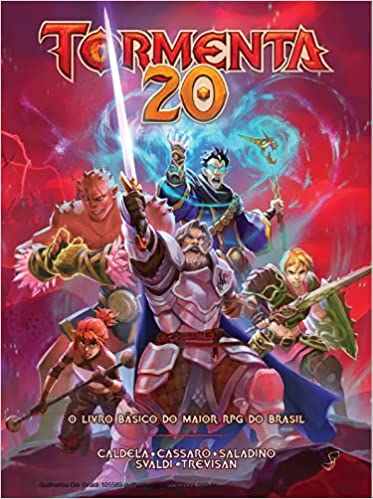

Tormenta RPG
Assim como em Dungeons And Dragons, Tormenta RPG é um universo de fantasias que abrange romances, histórias com suspense, aventura e ação. O RPG de mesa o qual seus autores principais eram conhecidos como o Trio Tormenta, após algumas edições se passarem novos integrantes se juntaram ao time principal, agora sendo chamado de Quinteto Tormenta. Tormenta é um RPG que quebrou expectativas e diversos recordes aqui no Brasil, em uma edição comemorativa, juntaram encartes especiais com 80 páginas explicativas de todo o cenário de Tormenta, reunindo personagens, criações até deuses, rapidamente esta edição se esgotou das bancas, tal sucesso foi refletido nas próximas edições seguintes, mais materiais foram reunidos feitos totalmente para o cenário. No ano de 2019, o grande Tormenta comemorou seus 20 anos com uma nova proposta e financiamento coletivo, no intuito de realizarem edição com participação dos fãs, tal campanha foi considerada a maior do Brasil em todos os aspectos, quebrando ainda mais recordes de arrecadação, visualização e alcance. O Sistema de Tormenta 20 é totalmente baseado em D20s, assim como DnD. O sistema d20 publicado pela Wizard Coast, consiste em um mecanismo para resolver ações dentro de uma campanha, são rolados dados de 20 lados e adicionados modificadores com base na aptidão natural do personagem, que se baseiam em força, destreza, etc..., tal sistema é utilizado como referência a muitos outros RPGS, conhecido como System Reference Document ou Documento de referência de sistema. Os outros tipos de dados como d12, d10, d8, d6, d4 são utilizados após uma rolagem de D20 normalmente para descobrir o que acontece depois que você é bem-sucedido em sua ação (o dano de um golpe, por exemplo).
